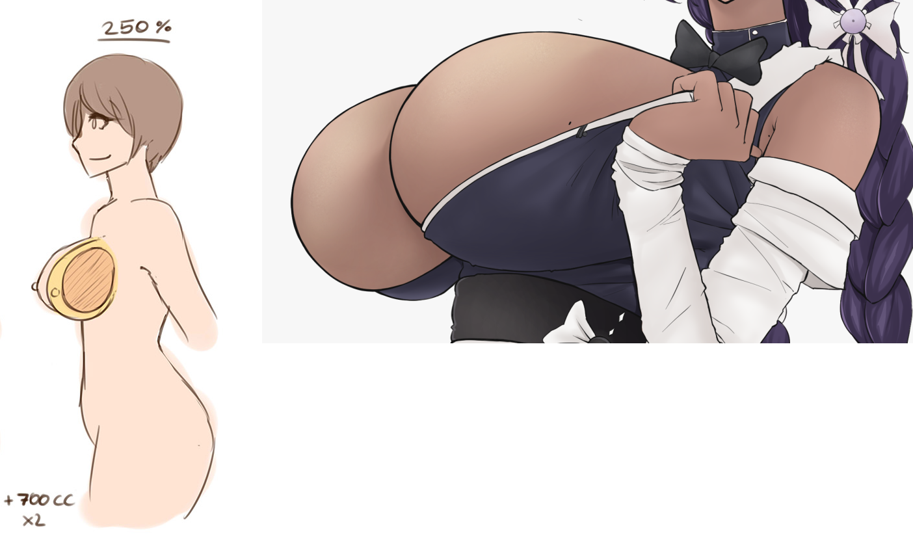
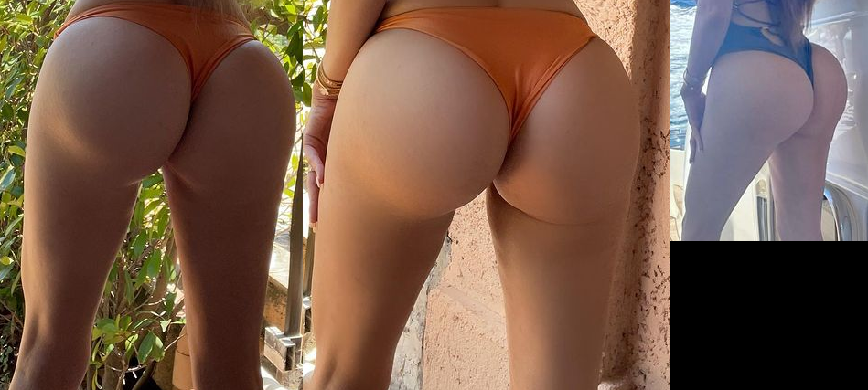
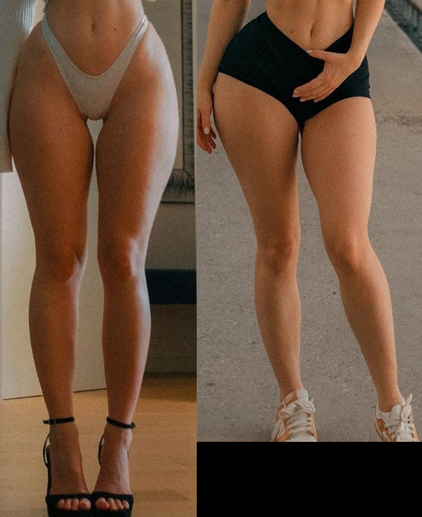

Commission info
Story
This commission is a remake, with edits to add more detail of the 2D comic by paisley2themax which I commissioned back in 2018.
Whereas the original was just 8 tiny panels crammed on to a sheet of paper, this will tentaively be 14 panels.
As a high-level overview:
Makana picks the first room to clean and discovers it has accumulated garbage which would take too much time to clean by hand. So she decides to use her vacuum-disposal mechanism to get the job done in no time flat. The process sucks up all non-anchored objects including 2 average-size women out cold within the garbage. Everything is sent to her belly. Once all collected, Makana pulls on her belly ring, activating her compression cycle and the contents are compressed into gas to be expelled once complete to replace the air of the room. To her surprise, the compression grants her curvier assets, and a little height.
Panels & references
Things in italics are changes / additions.
1
- Establishing shot of camera in doorway, behind maid's shoulder looking into the room.
- With at least one human visible behind some rubbish that's just out of the maid's view.
- Makana's visible eye half-open.
- I'd like to add some sort of object so that we can compare Makana's original height with her new height later on: maybe a painting or a switch on the wall to the left? This object will show up in the last panel where Makana admires her curves from the front so that we can see how much taller she has grown as the object won't move.
References (click images to open in new tab for full resolution)
These references are simply for her starting curves.
- Her breasts are small, but not flat.
- Her legs & thighs are thin.
1.1
- Close-up of Makana's lips deforming / transforming into her standard vacuum mouth shape (part 1).
- Possibly her lips seem really big as she pouts?
- Her hands gripped and raised close to her face like she is exerting herself.
- Eyes half-open, looking down to her lips.
References (and for 1.2)
I'm emphasizing the below because I find it important yet hard to explain.
Makana's lips deforming to look like a wide-mouth nozzle of a vacuum cleaner is inspired from this clip in media
The difference from the clip above is that I'd prefer if Makana's lips still looked sexy & puffy around the edges like in the comic i first showed you. here's a reference, along with a similar character's ability to vacuum things in case you'd like a little more inspiration:
The white text in the image source below is what I had sent over to the 2D artist for later comics as a more detailed reference.
1.2
- Close-up of Makana's lips deforming / transforming into her standard vacuum mouth shape (part 2).
- Her lips just one more step away from deformed into her vacuum mouth.
- Her hands gripped and raised closer to her face.
- Eyes closed.
2
- Camera now facing maid from the front as she starts sucking & vacuuming from the doorway.
- Arms lowered to how we see them in existing panel.
- Vacuum mouth on full display.
- Scraps of things & small objects already being sucked in.
- First full body shot: Include Makana's high heels.
- Eyes closed.
3
- One human flying towards her as another is already being sucked halfway in.
- Arms lowered.
- A bulge of the first human on her mouth & neck.
- Makana's belly is already filling up.
- Should this scene be flipped horizontally so Makana appears on the same side of the page as the previous panels?
3.1
- Front view, with camera at a little side angle, looking from below.
- Makana has tilted her head so that she can use gravity to help with sucking the last human down her mouth.
- The last human's arms & head & shoulders remain to be sucked in.
- A bulge of the last human on her mouth & neck.
- Makana's belly has filled up more.
4
- Makana standing there finished holding her bulged belly.
- Makana's belly-ring is clearly visible in case the viewer didn't notice.
- This panel is dedicated mostly to her belly.
- Makana looking down at her belly.
- Her Belly has to be bigger to the point she almost cannot reach her belly-ring, with proper bulges.
5
- Close-up of Makana pulling her belly-ring which acts like a spring/chain of an outdated toilet.
- Faint gurgling sounds.
6
- Gurgling and cracking as the contents flushing downwards.
- Bending her legs a little, exerting herself.
- The artist once again didn't have space to illustrate how Makana's belly uniquely shrinks down, like stuff really is getting flushed down into her backside for release.
- Let this be part 1 of her belly shrinking back to normal according to GIFs in references.
- Thus, I'd like to dedicate a few mini-panels to make sure Makana's compression (digestion) is shown properly in 6.1 and 6.2.

6.1
I'm assuming we need at least 3 panels to capture the GIFs, so let this be Part 2 of her belly shrinking back to normal according to GIFs.
6.2
I'm assuming we need at least 3 panels to capture the GIFs, so let this be Part 3 of her belly shrinking back to normal according to GIFs.
7
- Bent over, eyes closed, farting into the room.
- Bigger camera view if possible as artist was restricted.
- No sign of growth in this panel.
8
- Standing up, admiring her new curves from the front.
- Full body.
- The marker created in panel 1 on the wall/outside the room shows up here again so that we can compare her new height to her old.
References
Makana's boobs are like breast implants, they never sag, and project outwards a bit like torpedoes, but not to the extreme i show in the screenshot to the right, they're just an extreme example:
Makana's ass will look like butt implants, as later on she'll have a booty shelf. However for now, it grew a bit to look like a little bubble butt:
Makana's thighs thickened a bit:
8.1 [final panel]
- Back-shot of Makana spanking herself.
- Discovers her butt is softer, yet on a hair trigger as she lets out a little toot.
- Biting her bottom lip, eyes up, enjoying her self-spank.